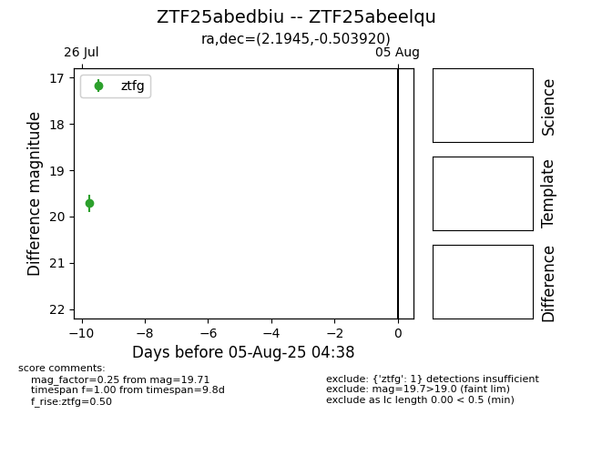

Target ZTF25abeelqu at 2025-08-05 04:38, see:
FINK: fink-portal.org/ZTF25abeelqu
Lasair: lasair-ztf.lsst.ac.uk/objects/ZTF25abeelqu
ALeRCE: alerce.online/object/ZTF25abeelqu
alt names
ZTF25abedbiu (ztf,fink)
ZTF25abeelqu (
coordinates:
equatorial (ra, dec) = (2.1945,-0.50392)
galactic (l, b) = (100.1332,-61.47288)
photometry
last ztfg=19.71
1 ztfg detections
